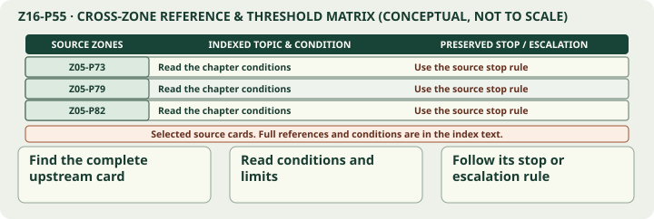

Z16-P55 · Field reference atlas · New manuscript
Wild Nuts, Seeds, Wild Rice Law and Mycotoxin, Allergy Index
Cross-reference Z05 nut and seed profiles (`Z05-P73`–`P82`) with toxic buckeyes, raw acorn tannins, butternut conservation, wild-rice sovereignty, and nut anaphylaxis.
When it applies · Autumn nut, seed, and aquatic-grain observation across Minnesota.
Equipment · Full offline reader (Z05, Z06, Z10), primary zone cards, and local emergency and agency references.

Actions
- Separate alternate-leaved oaks, hickories, walnuts, and hazelnuts sharply from opposite palmately-leaved toxic Ohio buckeye and horsechestnut (Aesculus, Z05-P73, Z05-P81) and reject raw tannin-rich acorns and unvalidated leaching shortcuts.[A05, B10, B16, B21]
- Honor strict conservation and sovereign legal boundaries: protect declining Minnesota Special Concern butternut trees (Z05-P76) and obey tribal sovereignty plus MN DNR licensing, flail statutes governing northern wild rice (Manoomin, Z05-P79).[A05, A06, B17, H01]
- Screen out moldy, cracked, musty, or dark-meated fallen nuts, hulls due to heat-stable mycotoxins, aflatoxins and enforce strict tree-nut anaphylaxis exclusions under WITHHELD_HOLD (Z05-P75, Z05-P82, Z10-P55).[A05, B21, B24, M14]
Failure recognition · Roasting toxic buckeyes, eating moldy fallen nuts, or harvesting wild rice unlawfully causes severe poisoning or tribal, state legal violations.[B10, B17, B21]
Verify · Aesculus exclusions, butternut, wild-rice legal limits, mold rejection, and nut-allergy warnings remain intact.[B10, B17, B21]
Stop or change course · Stop immediately on opposite palmate leaves, pale-eyed glossy buckeyes, musty, moldy kernels, or unlicensed wild-rice waters.[B10, B17, B21]
Evidence and editorial notes
- A05 · Bell Museum (UMN) · Minnesota Biodiversity Atlas (Current web edition)
- Section: Botanical and fungal cross-reference with permanent consumption HOLD · Conditions: Indexing Z05 species morphology, lookalikes, and Poison Control referrals
Support: Atlas botanical/fungal tables index accepted names, phenology, and lethal lookalikes solely for observation, hazard avoidance, and voucher documentation.
Limitations: No Z16 index entry may imply edibility or bypass Z05 multi-character and expert-review gates. · Conflicting evidence: None noted.
Editorial note: Preserves Z05 consumption HOLD inside Z16. · Specialist reviewer: Botanist and mycologist
Primary source · checked 2026-11-25 - A06 · Minnesota DNR · Minnesota Fishing Regulations (Current web edition)
- Section: Lawful harvest, trapping-hazard, and regulatory cross-reference · Conditions: Indexing Z06 harvest, Z07 trap-hazard avoidance, and agency reporting lines
Support: Regulatory quick-references always pair species/season pointers with jurisdiction, authority lookup, check date, and explicit rejection of emergency exemptions.
Limitations: Index pointers expire with annual rule cycles and require current agency verification. · Conflicting evidence: None noted.
Editorial note: Preserves Z06/Z07 legal authority bounds in Z16. · Specialist reviewer: Wildlife legal reviewer
Primary source · checked 2026-11-25 - B10 · National Capital Poison Center · Poisonous Plants and Berries Overview (Current web edition)
- Section: Poisonous plants, berries, and dose-dependent pediatric risk · Conditions: Household, trailside, and wild berries, seeds, and foliage
Support: Many attractive wild berries, seeds, and roots contain cardiac glycosides, alkaloids, or oxalates that cause rapid toxicity, especially in children.
Limitations: Never sample unknown plants; recognition and consumption suitability remain separate decisions. · Conflicting evidence: None noted.
Editorial note: Separates recognition from consumption. · Specialist reviewer: Clinical toxicologist and botanist
Primary source · checked 2026-11-25 - B16 · Minnesota DNR · Native Trees of Minnesota Identification Reference (Current web edition)
- Section: Native Minnesota trees: bark, buds, leaves, cones, and nuts · Conditions: Identifying oaks, pines, birches, maples, basswood, walnut, and spruce across seasons
Support: Reliable tree identification integrates leaf/needle arrangement, bud scales, bark pattern, fruit/cone structure, and habitat across seasons.
Limitations: Tree nuts and bark materials can require specific processing (e.g., tannin leaching) and remain on consumption HOLD until reviewed. · Conflicting evidence: None noted.
Editorial note: Anchors Z05 regional tree-food & bark profiles. · Specialist reviewer: Forestry botanist
Primary source · checked 2026-11-25 - B17 · Minnesota DNR · Minnesota Rare Species Guide and Native Plant Reference (Current web edition)
- Section: Protected rare plants and harvest conservation boundaries · Conditions: Minnesota endangered, threatened, and special-concern flora
Support: Rare native plants (e.g., wild ginseng, orchids, prairie perennials) carry strict legal protections against digging or harvest.
Limitations: Never dig unknown roots or bulbs on public land; verify legal collecting status before touching any specimen. · Conflicting evidence: None noted.
Editorial note: Prevents illegal digging of protected flora. · Specialist reviewer: State botanist and conservation officer
Primary source · checked 2026-11-25 - B21 · USDA Forest Service · Ethnobotany, Wild Foods, and Conservation Precautions (Current web edition)
- Section: Ethnobotanical limits, preparation hazards, and permit rules · Conditions: Wild plant/fungus gathering ethics and toxicity processing limits
Support: Some traditionally used plants contain raw toxins (cyanogenic glycosides, oxalates, tannins, alkaloids) that require verified preparation or remain unsafe for sensitive groups.
Limitations: Historical ethnobotanical mentions are never modern clinical safety clearances; maintain consumption status WITHHELD until qualified review. · Conflicting evidence: None noted.
Editorial note: Enforces recognition-vs-consumption separation. · Specialist reviewer: Ethnobotanist and food toxicologist
Primary source · checked 2026-11-25 - B24 · CDC MMWR · Notes from the Field: Severe Mushroom Poisoning — Minnesota 2018 (MMWR 68(21))
- Section: Rejection of folklore edibility tests and AI-only visual clearance · Conditions: All wild plant, berry, root, and fungal screening
Support: Universal skin/lip rub tests, silver-spoon tests, animal-browsing observations, single photos, and generated illustrations never establish edibility.
Limitations: If any diagnostic feature, site-contamination history, or expert review is missing, consumption remains strictly WITHHELD. · Conflicting evidence: None noted.
Editorial note: Enforces Z05 fail-closed edibility rule. · Specialist reviewer: Botanist, mycologist, and clinical toxicologist
Primary source · checked 2026-11-25 - H01 · Minnesota DNR · Minnesota Fishing Regulations (Current web edition)
- Section: Licensing, seasons, limits, and waterbody-specific rules · Conditions: Minnesota angling across inland, border, and designated waters
Support: Anglers must hold a valid license unless explicitly exempt and verify current season dates, possession limits, size slots, and special waterbody rules before fishing.
Limitations: Regulations change annually and differ on border waters, trout streams, and tribal/ceded territories; no emergency creates an automatic legal exemption. · Conflicting evidence: None noted.
Editorial note: Establishes Z06 fishing authority gate. · Specialist reviewer: Minnesota DNR fisheries and legal reviewer
Primary source · checked 2026-11-25 - M14 · CDC · What to Do After a Tick Bite (2026)
- Section: How to remove a tick; Symptoms after a tick bite · Conditions: Attached tick on a person in U.S. settings
Support: Remove promptly with clean fine-tipped tweezers close to the skin and steady upward pressure. Clean the site and obtain evaluation for rash or fever in subsequent weeks.
Limitations: No image determines species, prophylaxis or ruling out illness. · Conflicting evidence: See A02 claim audit for boundaries.
Editorial note: Core Upper Midwest vector-borne disease prevention card evidence. · Specialist reviewer: Infectious disease and regional public health
Primary source · checked 2026-11-25
Source lineage · New manuscript (Z16 P20 botanical index) · Classification · New manuscript.